CLEFIA¶
Description¶
CLEFIA is a proprietary block cipher algorithm, developed by Sony. It is intended to be used in DRM systems. It is among the cryptographic techniques recommended candidate for Japanese government use by CRYPTREC revision in 2013. It has two  S-boxes:
S-boxes: 
Summary¶
| S-box | NL | LD | DEG | AI | MAXAC |  |
LP | DP |
|---|---|---|---|---|---|---|---|---|
| S0 | 100 | 40 | 6 | 4 | 96 | 269056 | 0.0478515625 | 0.0390625 |
| S1 | 112 | 56 | 7 | 4 | 32 | 133120 | 0.015625 | 0.015625 |
S0¶
Representations¶
Polynomial function over  with irreducible polynomial
with irreducible polynomial  : Trace representation
: Trace representation
Polynomial representation in ANF
Walsh Spectrum representation (except first row and column):

Other useful information in cryptanalysis¶
Cycle structure:
| Cycle length | Number of cycles |
|---|---|
| 4 | 1 |
| 5 | 2 |
| 17 | 1 |
| 109 | 1 |
| 116 | 1 |
There are no linear structures
It has no fixed points.
It has 2 negated fixed points: (0,1,0,0,0,0,0,1), (1,1,1,1,1,1,0,1)
Construction¶
 is generated by combining four 4-bit S-boxes
is generated by combining four 4-bit S-boxes  and
and  in the following way:
in the following way:
Step 1. 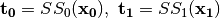 where 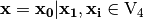
Step 2. 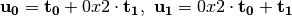
Step 3. 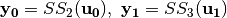 where 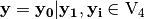
Tables of CLEFIA S-boxes 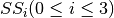:
| x | 0 | 1 | 2 | 3 | 4 | 5 | 6 | 7 | 8 | 9 | a | b | c | d | e | f |
| SS0(x) | e | 6 | c | a | 8 | 7 | 2 | f | b | 1 | 4 | 0 | 5 | 9 | d | 3 |
| SS1(x) | 6 | 4 | 0 | d | 2 | b | a | 3 | 9 | c | e | f | 8 | 7 | 5 | 1 |
| SS2(x) | b | 8 | 5 | e | a | 6 | 4 | c | f | 7 | 2 | 3 | 1 | 0 | d | 9 |
| SS3(x) | a | 2 | 6 | d | 3 | 4 | 5 | e | 0 | 7 | 8 | 9 | b | f | c | 1 |
The multiplication in 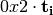 is performed in  defined by the lexicographically first primitive polynomial
defined by the lexicographically first primitive polynomial  . Here we provide the table of multiplication of 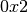 with an element modulo . The entries in the Table are represented in hexadecimal notation for compactness. The column indices represent the element to be multplied by modulo , and the product is the corresponding entry in the column.
. Here we provide the table of multiplication of 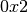 with an element modulo . The entries in the Table are represented in hexadecimal notation for compactness. The column indices represent the element to be multplied by modulo , and the product is the corresponding entry in the column.
Table of the multiplication  :
:
 |
0 | 1 | 2 | 3 | 4 | 5 | 6 | 7 | 8 | 9 | a | b | c | d | e | f |
|
0 | 2 | 4 | 6 | 8 | a | c | e | 3 | 1 | 7 | 5 | b | 9 | f | d |
Next figure shows the construction of :
{kind=link}
Hence, CLEFIA S0 can be denoted by:
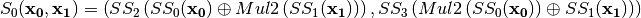
Note that the symbol  refers to the composition of functions, refers to the direct sum of functions and 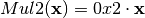.
refers to the composition of functions, refers to the direct sum of functions and 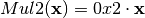.
The criteria of several constructions in are summarized in the following tables:


You can find a program which calculates the Truth Tables of these constructions in chapter “Operations and constructions over Vector Boolean Functions”, section “Addition of coordinate functions”.
Mul2¶
Let the multiplication in defined by the primitive polynomial as in CLEFIA cipher.
Polynomial representation in ANF
Cycle structure:
| Cycle length | Number of cycles |
|---|---|
| 1 | 1 |
| 15 | 1 |
There are 225 linear structures
It has 1 fixed point: (0,0,0,0)
It has 1 negated fixed point: (0,1,0,1)
 ¶
¶
The operation in Step 2 can be interpreted as the composition of 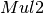 and 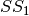.
Polynomial representation in ANF
Cycle structure:
| Cycle length | Number of cycles |
|---|---|
| 1 | 2 |
| 2 | 2 |
| 10 | 1 |
There are 3 linear structures:
([0 0 1 0],[0 1 0 1])
([0 1 0 0],[0 1 0 1])
([0 1 1 0],[0 1 0 1])
It has 2 fixed points: (0,1,0,0), (0,1,0,1)
It has 1 negated fixed point: (1,1,0,0)
 ¶
¶
The operation in Step 2 can be interpreted as the composition of and 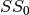.
Polynomial representation in ANF
Cycle structure:
| Cycle length | Number of cycles |
|---|---|
| 16 | 1 |
There are 3 linear structures:
([0 0 1 1],[1 0 0 1])
([1 0 0 1],[1 0 0 1])
([1 0 1 0],[1 0 0 1])
It has no fixed points.
It has 1 negated fixed point: (0,0,0,0)
 ¶
¶
The operation 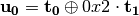 in Step 2 can be interpreted as the direct sum of and 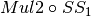.
Polynomial representation in ANF
There are 6 linear structures:
([0 0 0 0 0 0 1 0],[0 1 0 1])
([0 0 0 0 0 1 0 0],[0 1 0 1])
([0 0 0 0 0 1 1 0],[0 1 0 1])
([0 0 1 1 0 0 0 0],[1 1 0 0])
([1 0 0 1 0 0 0 0],[1 1 0 0])
([1 0 1 0 0 0 0 0],[1 1 0 0])
 ¶
¶
The operation 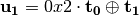 in Step 2 can be interpreted as the direct sum of 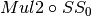 and .
Polynomial representation in ANF
There are 6 linear structures:
([0 0 0 0 0 0 1 0],[1 0 1 0])
([0 0 0 0 0 1 0 0],[1 0 1 0])
([0 0 0 0 0 1 1 0],[1 0 1 0])
([0 0 1 1 0 0 0 0],[1 0 0 1])
([1 0 0 1 0 0 0 0],[1 0 0 1])
([1 0 1 0 0 0 0 0],[1 0 0 1])
 ¶
¶
In the Step 3, is obtained by composing 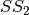 S-box with .
Polynomial representation in ANF
There are no linear structures.
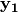¶
In the Step 3, is obtained by composing S-box with .
Polynomial representation in ANF
There are no linear structures.
S1¶
Representations¶
Polynomial function over with irreducible polynomial : Trace representation
Polynomial representation in ANF
Walsh Spectrum representation (except first row and column):

Other useful information in cryptanalysis¶
Cycle structure:
| Cycle length | Number of cycles |
|---|---|
| 256 | 1 |
There are no linear structures
It has no fixed points.
It has 1 negated fixed point: (0,0,1,1,1,0,1,0)